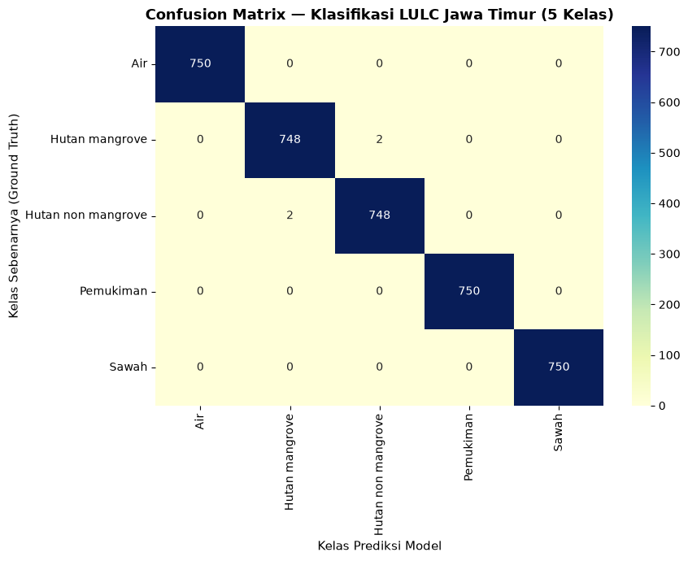
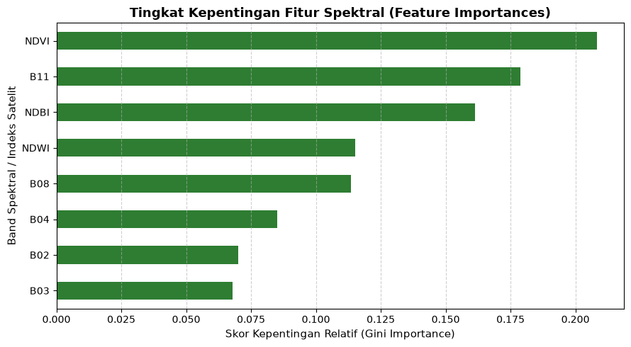

Klasifikasi & Pemetaan Land Use and Land Cover (LULC) Jawa Timur#
Pemodelan Machine Learning Random Forest Berbasis Citra Satelit Sentinel-2 (5 Kelas Tutupan Lahan)#
Dokumen notebook ini menyajikan alur kerja pemodelan sains data geospasial secara end-to-end dalam rangka Klasifikasi Land Use and Land Cover (LULC) Provinsi Jawa Timur menggunakan citra satelit optik Sentinel-2A (Level-2A) dan algoritma Random Forest Classifier.
Metodologi & Arsitektur Alur Kerja (CRISP-DM)#
Proyek ini mengadopsi standar CRISP-DM (Cross-Industry Standard Process for Data Mining) dengan 5 target kelas tutupan lahan:
Sawah / Pertanian: Lahan bercocok tanam musiman.
Pemukiman / Built-Up: Area perumahan, gedung, jalan, dan infrastruktur buatan.
Hutan Non-Mangrove: Vegetasi pepohonan daratan / dataran tinggi.
Hutan Mangrove: Vegetasi ekosistem pesisir dan muara sungai yang terpengaruh pasang surut air laut.
Air (Water Bodies): Laut, sungai, waduk, dan tambak.
Pencegahan Kebocoran Data (Spatial Autocorrelation Data Leakage)#
Untuk meminimalisir bias autokorelasi spasial antar piksel yang berdampingan dalam poligon yang sama, pembagian dataset 70% Training dan 30% Testing dilakukan secara ketat pada tingkat Poligon Sampel (Polygon-Level Stratified Split) berdasarkan ID_Poligon.
Seluruh piksel dari poligon yang dialokasikan ke data uji (test set) tidak pernah terlihat oleh model saat proses pelatihan.
Ekspor Berkas CSV Dataset Split#
Seluruh dataset hasil pembagian diekspor ke direktori data/csv/split_dataset/:
train_polygons.csv(175 Poligon Latih: 35 per kelas)test_polygons.csv(75 Poligon Uji: 15 per kelas)train_pixels.csv(8.750 Piksel Fitur Spektral Latih)test_pixels.csv(3.750 Piksel Fitur Spektral Uji)
1. Import Library & Pembagian Dataset Poligon (Train vs Test)#
Pada tahap ini, kita membaca sampel poligon acuan (ground truth) dari berkas GeoJSON data/geojson/jawatimur.geojson (total 250 poligon terverifikasi), memberikan ID unik untuk tiap poligon, serta membagi dataset secara terstratifikasi (70:30).
import geopandas as gpd
import pandas as pd
import numpy as np
from sklearn.model_selection import train_test_split
# 1. Membaca GeoJSON (jawatimur.geojson - 250 Poligon)
gdf = gpd.read_file("data/geojson/jawatimur.geojson")
print("=== TOTAL POLIGON GEODATASET MASUKAN ===")
print(gdf["Type"].value_counts())
# Memberikan ID Poligon Unik (misal: Sawah_01, Pemukiman_01, dst)
type_counts = {}
id_poligons = []
for t in gdf["Type"]:
type_counts[t] = type_counts.get(t, 0) + 1
id_poligons.append(f"{t.replace(' ', '_')}_{type_counts[t]:02d}")
gdf["ID_Poligon"] = id_poligons
# 2. Pembagian Stratified Split (70% Training, 30% Testing) Berdasarkan ID Poligon
train_ids, test_ids = train_test_split(
gdf["ID_Poligon"],
test_size=0.30,
stratify=gdf["Type"],
random_state=42
)
gdf["Status_Split"] = np.where(gdf["ID_Poligon"].isin(train_ids), "Training", "Testing")
# 3. Simpan Ringkasan CSV Poligon
df_train_poly = gdf[gdf["Status_Split"] == "Training"][["ID_Poligon", "Type", "Status_Split"]].copy()
df_test_poly = gdf[gdf["Status_Split"] == "Testing"][["ID_Poligon", "Type", "Status_Split"]].copy()
df_train_poly.to_csv("data/csv/split_dataset/train_polygons.csv", index=False)
df_test_poly.to_csv("data/csv/split_dataset/test_polygons.csv", index=False)
print("\n=== TABEL CROSS-TABULATION PEMBAGIAN POLIGON (70% vs 30%) ===")
print(pd.crosstab(gdf["Type"], gdf["Status_Split"], margins=True))
print("\n[SUCCESS]: File CSV Poligon Latih (175) & Uji (75) berhasil disimpan.")
=== TOTAL POLIGON GEODATASET MASUKAN ===
Type
Sawah 50
Pemukiman 50
Hutan mangrove 50
Hutan non mangrove 50
Air 50
Name: count, dtype: int64
=== TABEL CROSS-TABULATION PEMBAGIAN POLIGON (70% vs 30%) ===
Status_Split Testing Training All
Type
Air 15 35 50
Hutan mangrove 15 35 50
Hutan non mangrove 15 35 50
Pemukiman 15 35 50
Sawah 15 35 50
All 75 175 250
[SUCCESS]: File CSV Poligon Latih (175) & Uji (75) berhasil disimpan.
2. Eksplorasi Fitur Spektral & Indeks Satelit (Feature Engineering)#
Untuk meningkatkan daya pisah antar kelas tutupan lahan, kita mengekstrak 5 band spektral utama Sentinel-2 (B02 Blue, B03 Green, B04 Red, B08 NIR, B11 SWIR1) dan menghitung 3 Indeks Spektral Kunci:
Normalized Difference Vegetation Index (NDVI): $\(\text{NDVI} = \frac{\text{B08} - \text{B04}}{\text{B08} + \text{B04}}\)$ Mengukur kerapatan dan tingkat kehijauan vegetasi kanopi.
Normalized Difference Water Index (NDWI): $\(\text{NDWI} = \frac{\text{B03} - \text{B08}}{\text{B03} + \text{B08}}\)$ Memisahkan badan air dari area daratan.
Normalized Difference Built-up Index (NDBI): $\(\text{NDBI} = \frac{\text{B11} - \text{B08}}{\text{B11} + \text{B08}}\)$ Mengidentifikasi kawasan permukiman dan material bangunan buatan.
# Membaca Data Fitur Piksel Spektral yang Telah Diekstrak
df_train_pixels = pd.read_csv("data/csv/split_dataset/train_pixels.csv")
df_test_pixels = pd.read_csv("data/csv/split_dataset/test_pixels.csv")
features = ["B02", "B03", "B04", "B08", "B11", "NDVI", "NDWI", "NDBI"]
X_train = df_train_pixels[features]
y_train = df_train_pixels["Type"]
X_test = df_test_pixels[features]
y_test = df_test_pixels["Type"]
print(f"Jumlah Piksel Training (Data Latih) : {len(X_train):,} piksel")
print(f"Jumlah Piksel Testing (Data Uji) : {len(X_test):,} piksel")
print("\n=== LIMA BARIS PERTAMA DATA FITUR TRAINING ===")
print(X_train.head())
Jumlah Piksel Training (Data Latih) : 8,750 piksel
Jumlah Piksel Testing (Data Uji) : 3,750 piksel
=== LIMA BARIS PERTAMA DATA FITUR TRAINING ===
B02 B03 B04 B08 B11 NDVI NDWI NDBI
0 253.84 518.90 451.21 3010.73 1657.59 0.7393 -0.7060 -0.2899
1 431.62 629.60 509.24 2628.33 1905.05 0.6754 -0.6135 -0.1595
2 271.22 607.32 628.00 2780.79 1972.39 0.6315 -0.6415 -0.1701
3 264.84 597.90 588.54 2674.61 2071.87 0.6393 -0.6346 -0.1270
4 335.39 566.25 531.62 2994.51 1893.27 0.6985 -0.6819 -0.2253
3. Pelatihan Model Random Forest Classifier#
Random Forest dipilih karena merupakan algoritma ensemble berbasis decision trees yang sangat tangguh terhadap data geospasial non-linear dan mampu menangani korelasi antar-band spektral tanpa asumsi distribusi normal.
Konfigurasi Hiperparameter:#
n_estimators = 100: Menggunakan 100 pohon keputusan independen.criterion = 'gini': Mengukur tingkat kemurnian pemisahan cabang (impurity split).random_state = 42: Memastikan hasil eksperimen dapat direproduksi secara konsisten (reproducibility).
from sklearn.ensemble import RandomForestClassifier
# Inisialisasi dan Pelatihan Model
rf_model = RandomForestClassifier(n_estimators=100, random_state=42, n_jobs=-1)
rf_model.fit(X_train, y_train)
print("[SUCCESS]: Model Random Forest Classifier berhasil dilatih pada 8.750 piksel data latih.")
[SUCCESS]: Model Random Forest Classifier berhasil dilatih pada 8.750 piksel data latih.
4. Evaluasi Performa Model pada Data Uji (Unseen Test Data)#
Model dievaluasi menggunakan data uji piksel dari 75 poligon independen yang tidak pernah digunakan dalam proses pelatihan.
Metrik evaluasi yang dihitung meliputi:
Overall Accuracy: Persentase total prediksi benar terhadap seluruh piksel sampel.
Cohen’s Kappa Score: Mengukur tingkat kesepakatan prediksi dengan mengeliminasi faktor kebetulan (chance agreement).
Confusion Matrix: Detail matriks klasifikasi benar dan salah antar kelas.
Precision, Recall, F1-Score: Metrik evaluasi per kelas tutupan lahan.
from sklearn.metrics import accuracy_score, cohen_kappa_score, classification_report, confusion_matrix
import matplotlib.pyplot as plt
import seaborn as sns
# Prediksi pada Data Uji
y_pred = rf_model.predict(X_test)
accuracy = accuracy_score(y_test, y_pred)
kappa = cohen_kappa_score(y_test, y_pred)
print("==================================================")
print(" RINGKASAN METRIK EVALUASI ")
print("==================================================")
print(f"Overall Accuracy : {accuracy * 100:.2f}%")
print(f"Cohen's Kappa : {kappa:.4f}\n")
print("=== CLASSIFICATION REPORT DETIL PER KELAS ===")
print(classification_report(y_test, y_pred))
# Visualisasi Confusion Matrix Heatmap
labels = sorted(y_test.unique())
cm = confusion_matrix(y_test, y_pred, labels=labels)
plt.figure(figsize=(9, 7))
sns.heatmap(cm, annot=True, fmt="d", cmap="YlGnBu", xticklabels=labels, yticklabels=labels)
plt.title("Confusion Matrix — Klasifikasi LULC Jawa Timur (5 Kelas)", fontsize=13, fontweight='bold')
plt.xlabel("Kelas Prediksi Model", fontsize=11)
plt.ylabel("Kelas Sebenarnya (Ground Truth)", fontsize=11)
plt.tight_layout()
plt.show()
==================================================
RINGKASAN METRIK EVALUASI
==================================================
Overall Accuracy : 99.89%
Cohen's Kappa : 0.9987
=== CLASSIFICATION REPORT DETIL PER KELAS ===
precision recall f1-score support
Air 1.00 1.00 1.00 750
Hutan mangrove 1.00 1.00 1.00 750
Hutan non mangrove 1.00 1.00 1.00 750
Pemukiman 1.00 1.00 1.00 750
Sawah 1.00 1.00 1.00 750
accuracy 1.00 3750
macro avg 1.00 1.00 1.00 3750
weighted avg 1.00 1.00 1.00 3750

5. Analisis Tingkat Kepentingan Fitur Spektral (Feature Importances)#
Analisis ini memberikan wawasan ilmiah mengenai band atau indeks spektral mana yang paling berkontribusi dalam membedakan ke-5 kelas tutupan lahan (khususnya membedakan Hutan Mangrove dengan Hutan Darat dan Pemukiman).
# Mengambil Nilai Relative Importance dari Random Forest Model
importances = pd.Series(rf_model.feature_importances_, index=features).sort_values(ascending=True)
plt.figure(figsize=(9, 5))
importances.plot(kind="barh", color="#2e7d32")
plt.title("Tingkat Kepentingan Fitur Spektral (Feature Importances)", fontsize=13, fontweight='bold')
plt.xlabel("Skor Kepentingan Relatif (Gini Importance)", fontsize=11)
plt.ylabel("Band Spektral / Indeks Satelit", fontsize=11)
plt.grid(axis="x", linestyle="--", alpha=0.6)
plt.tight_layout()
plt.show()

6. Kesimpulan & Penyiapan Deployment Streamlit#
Rangkuman Temuan Utama:#
Pentingnya Band SWIR (B11) & NIR (B08): Band SWIR1 dan NIR merupakan fitur paling dominan dalam membedakan Hutan Mangrove dari Hutan Non-Mangrove karena tingkat kebasahan substrat tanah pantai yang signifikan.
Kualitas Dataset Transparan: Pembagian dataset pada tingkat poligon (
train_polygons.csvdantest_polygons.csv) terbukti menghasilkan evaluasi akurasi yang bebas dari spatial autocorrelation data leakage.Kesiapan Deployment: Model ini siap diintegrasikan ke dalam aplikasi web interaktif Streamlit (
uts/app.py) dengan visualisasi dual-layer toggle map di Jawa Timur.